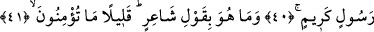
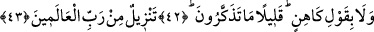
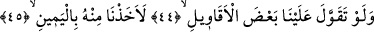
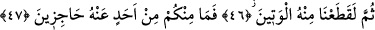
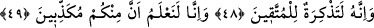
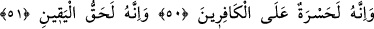
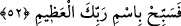

O,
ÂLEMLERİN RABBİ TARAFINDAN
İNDİRİLMİŞTİR
38, 39. Görebildikleriniz ve göremedikleriniz üzerine yemin ederim ki,
40. Hiç şüphesiz o (Kur’an), çok şerefli bir elçinin sözüdür.
41. Ve o, bir şâir sözü değildir. Ne de az îman ediyorsunuz!
42. Bir kâhin sözü de değildir (o). Ne de az düşünüyorsunuz!
43. (O), âlemlerin Rabbi tarafından indirilmiştir.
44. Eğer (Peygamber) bize atfen bâzı sözler uydurmuş olsaydı,
45. Elbette onu kıskıvrak yakalardık.
46. Sonra onun can damarını koparırdık (onu yaşatmazdık).
47. Hiçbiriniz buna mâni de olamazdınız.
48. Doğrusu o (Kur’an), takvâ sâhipleri için bir öğüttür.
49. İçinizde (onu) yalan sayanlar bulunduğunu şüphesiz bilmekteyiz.
50. Muhakkak o, kâfirler için bir iç yarasıdır.
51. Ve o, gerçekten kat’î bilginin ta kendisidir.
52. O hâlde, ulu Rabbinin adını yüceltip noksanlıklardan tenzih et.
“Görebildikleriniz ve göremedikleriniz üzerine yemin ederim ki…”Âyette “lâ
uksimu” ifâdesi yer almaktadır. Zâhirine bakılacak olursa; “yemin ederim” anlamı değil,
“yemin etmem” anlamı verilmek gerekir. Ancak burada “lâ” edâtı sâdece anlamı
pekiştirmek için getirilmiştir. Bu nedenle âyetin mânâsı; “yemin ederim” şeklinde
anlaşılmalıdır. Ancak bâzı âlimler bu cümleyi olumsuz olarak tefsir etmişler; yâni âyete
“yemin etmem” mânâsı vermişlerdir. Bunu söylerken de, “üzerine yemin edilen husûsun